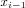

The steady state is the state in which the state variables of the model, e.g. the species concentrations do not change in time. Mathematically this is expressed by setting the differential equations that describe the time evolution of the metabolic system to zero. This forms a system of algebraic non-linear equations. To solve them, COPASI can use a series of strategies using more than one numerical method.
All calculations are done based on particle numbers and particle number rates rather than concentrations internally. The reduced model (see
Deterministic Interpretation of the Model) is used. The Jacobian (which is used in the Newton method and when eigenvalues of the Jacobian are requested) is calculated using finite differences. The Eigenvalues of the Jacobian are calculated using LAPACK.
Options for Steady State Analysis
- Use Newton
- This parameter is a Boolean value to determine whether to use the damped Newton method on the non-linear algebraic equations defining the steady-state. The initial concentrations set by the user are taken as guesses for the solution. A value of '1' (the default) indicates that COPASI shall use the damped Newton method.
The damped Newton method is a variant of the famous Newton method for the solution of systems of non-linear equations. The solution is obtained from an iterative procedure that refines an initial guess until the residual error is smaller than required. If a limit number of iterations is reached without an acceptable solution, the method halts without a solution.
The iteration of the plain Newton method is:
In the damped method if  has a larger residual error than one looks at:
where
and accepts the first such value that has a smaller residual error than . If none is found, the procedure halts without a solution (because it is at a local minimum).
- Use Integration
- This parameter is a Boolean value to determine whether to use the deterministic ODE solver to follow the time course defined by the differential equations until a steady state is reached. If at units of time no steady state has been reached the method halts with no solution. If Use Newton is '1' an attempt to find the Steady-state via the damped Newton method is made at each intermediate time point. A value of '1' (the default) indicates that COPASI shall use integration.
- Use Back Integration
- This parameter is a Boolean value to determine whether to use the deterministic ODE solver to reverse the time course (going backwards in time) defined by the differential equations until a steady state is reached. If at units of time no Steady-State has been reached the method halts with no solution. If Use Newton is '1' an attempt to find the steady-state via the damped Newton method is made at each intermediate time point. A value of '1' indicates that COPASI shall use back integration.
- Accept Negative Concentrations
- This parameter is a boolean value to determine whether to accept a steady-state, which contains negative concentrations. A value of '1' indicates that negative concentrations are acceptable whereas a value of '0' (the default) indicates that such states are discarded.
- Iteration Limit
- This parameter is a positive integer to determine the maximum number of iterations the damped Newton method shall perform before it fails. The default is '50'.
- Derivation Factor
- This is a numeric value to determine the step size used to calculate . The default is '0.001'.
- Resolution
- This is a positive numeric value to determine the resolution used to decide whether the current state is acceptable as a steady-state. If the absolute change of each state variable is smaller than the resolutions the state is accepted. The default is .
Note, this value is interpreted as a concentration value, even though the calculation internally uses particle numbers. The reason for that is purely heuristic: In many cases the modeler will choose the units in a way that concentration values are neither extremely large nor extremely small numerically so that the default value for this parameter leads to useful results. However generally it is not save to just keep the default value without checking.